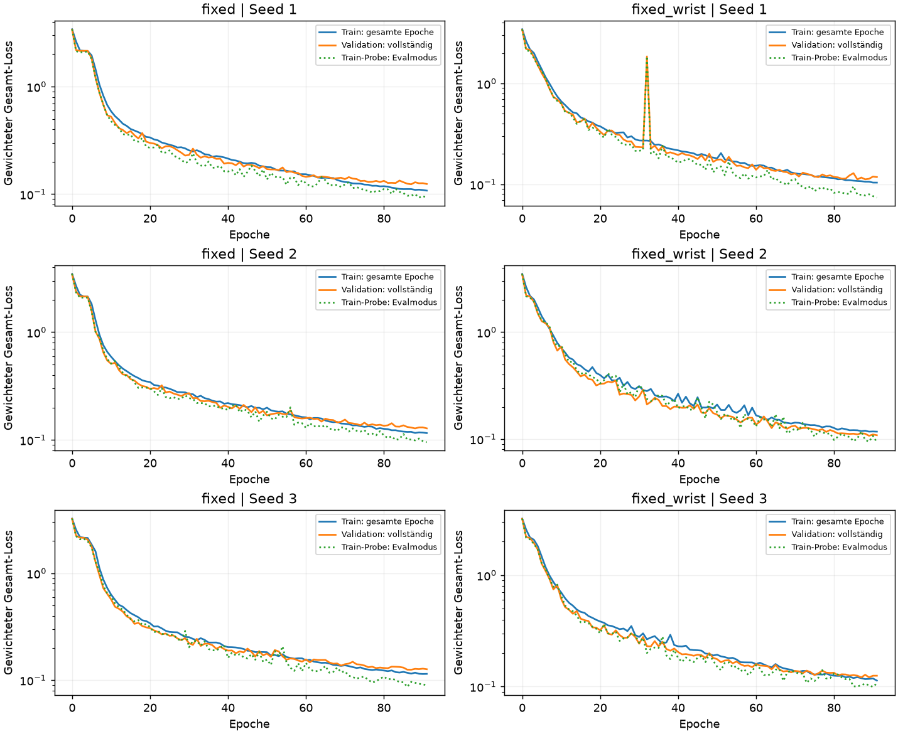
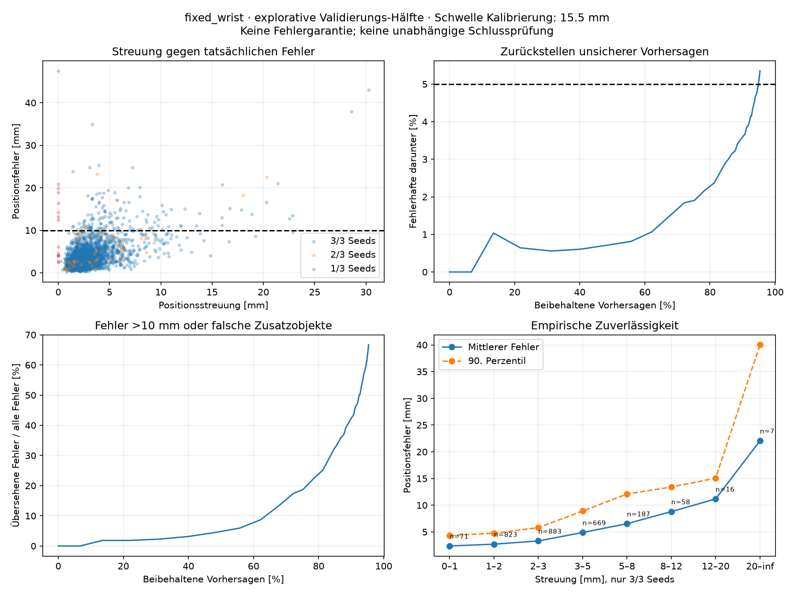
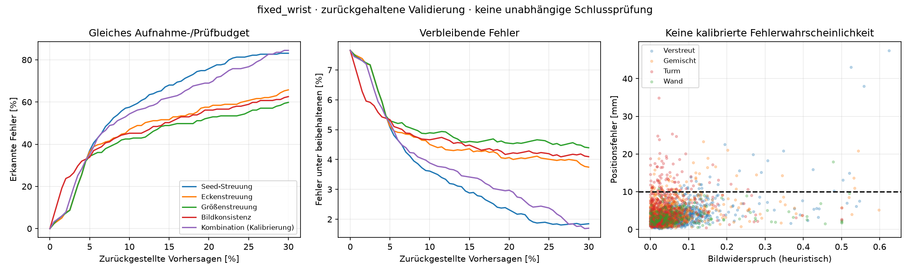
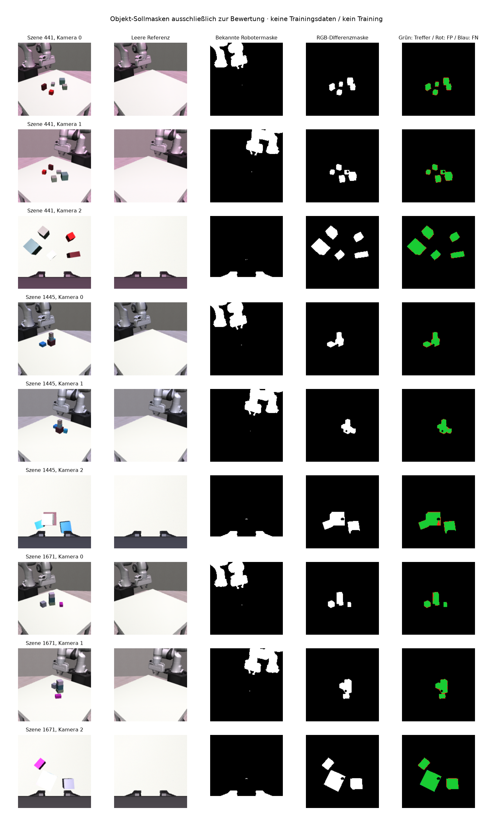
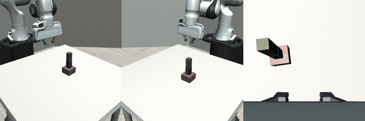

EIGENE FORSCHUNG / VISION · STAND 02. NOVEMBER 2026
Von Bildern zu überprüfbaren 3D-Boxen
Unbekannte Quader aus mehreren Kamerabildern erfassen, Unsicherheit prüfen und zusätzliche Ansichten gezielt einsetzen. Eine zuverlässige autonome Montage ist noch nicht nachgewiesen.
Ergebnisdaten konnten nicht geladen werden. Die Berichte sind unter „Nachweise“ erreichbar.
01 / ABGESCHLOSSEN
Vision-Modell V2
Bis zu fünf ungeordnete Quader aus zwei festen Kameras und optional einer Handkamera. Kalibrierte Strahlen ergänzen die RGB-Eingaben. Ausgegeben werden Existenzscore, Position, Größe, Orientierung und Sichtbarkeit. Es gibt noch keinen direkt gelernten Positionsfehlerbereich.
Mittelwerte über drei Seeds. Die letzte Spalte verlangt Erkennung und Position innerhalb von 10 mm, keine richtige Größe, Orientierung oder erfolgreiche Montage. Das veränderte Quaderpanel variiert mehrere Faktoren gleichzeitig.
Architektur und Training
904.112 Parameter, sechs Conv2D-Schichten mit 32/64/128 Kanälen und ReLU. Drei Transformer-Decoder-Schichten, vier Attention-Köpfe, Breite 128, Feedforward-Breite 256, GELU und Dropout 0,1. Fünf Objektslots mit jeweils 16 Rohwerten. AdamW; kombinierter Loss für Detektion, Position, Größe, symmetriebewusste Orientierung und Sichtbarkeit. Räumliche Fehler werden ausdrücklich bestraft, der Detektionsscore ist jedoch keine kalibrierte Positionssicherheit.
Modellinformationen, vollständige Losskurven und ausgewählte 3D-Abgleiche ↗
02 / DIAGNOSE OHNE TRAINING
Was verrät die Uneinigkeit der Seeds?
Die drei Modelle derselben Kameravariante werden anhand ihrer vorhergesagten Objekte einander zugeordnet. Positions-, Größen- und Eckenstreuung sowie fehlende Seed-Unterstützung liefern Warnsignale. Kleine Streuung kann dennoch einen gemeinsamen Fehler verbergen.
Die Schwelle wurde auf 1.000 Validierungsszenen gewählt und auf den anderen 1.000 geprüft. Diese Daten hatten schon zur Checkpoint-Auswahl gedient: explorative Diagnose, keine unabhängige Schlussprüfung. Eine Streuung von 2 mm bedeutet keinen garantierten Fehlerbereich von ±2 mm.

03 / KEIN QUALITÄTSVORTEIL BELEGT
Erste Bildkonsistenzprüfung
Vorhergesagte Boxen werden in die bekannten Kamerabilder projiziert. Sichtbare Konturen, Bildkanten und eine einfache Hintergrundheuristik werden verglichen. Näher liegende vorhergesagte Boxen verdecken dahinterliegende Flächen.
Die einfache RGB-Heuristik ist schwächer als die Seed-Streuung. Helle beziehungsweise überstrahlte Objektflächen können mit dem Tisch verwechselt werden; selbst korrekte Geometrie bekommt dadurch einen hohen Widerspruchswert. Eine günstigere Bildbewertung allein belegt keine präzise 3D-Rekonstruktion.
Gleiches Budget: 10 % zurückgestellte Vorhersagegruppen. Fehler: Position mehr als 10 mm daneben oder falsches Zusatzobjekt. Größen- und Orientierungsfehler allein zählen hier noch nicht mit.

04 / REFERENZEN AUS DER SIMULATION
Leere Referenzbilder und bekannte Robotermasken
Für 2.000 bestehende Szenen wurden 6.000 objektfreie Referenzbilder bei derselben Kamera, Roboterpose und Beleuchtung erzeugt. Die Kalibrierung ist bereits aus der Simulation bekannt. Exakte Objektmasken bleiben von den Eingaben getrennt und dienen nur zur Offline-Schwellenauswahl und Qualitätsmessung.
RGB-Differenzen liefern binären Vordergrund. Das verbessert die Grundlage gegenüber der pauschalen Hell-/Dunkelheuristik, trennt aber aneinander angrenzende Turmteile noch nicht als einzelne Objektinstanzen.
Die Pixelwerte gelten außerhalb ausgesparter Roboterränder. Hoher Pixel-Recall ist keine hohe Objekt-Erkennungsrate. Die Referenzen sind in dieser Simulation passend und gleich beleuchtet; wechselnde reale Belichtung und Handkameraposen bleiben eigene Anforderungen. Auch die neue Kombination zeigt keinen nachgewiesenen Vorteil bei der Erkennung von Positionsfehlern.

05 / GEOMETRISCHE OPTIMIERUNG, KEIN MODELLTRAINING
Werden die Boxen tatsächlich genauer?
Ein begrenzter gemeinsamer Optimierer verändert Position, Größe und Orientierung der vorhandenen Boxen. Er nutzt Vordergrundabdeckung über drei Ansichten, sichtbare Bildkanten und einfache geometrische Plausibilität. Die Sollgeometrie ist kein Optimierungseingang.
Die Einstellungen sind vorab festgelegt. Neue Entwicklungs- und Prüfszenen stammen aus getrennten Familien; die bisherigen reservierten Schlussprüfungen bleiben unberührt. Ausgewertet werden Position, physische Boxecken, Größenfehler, Verbesserungen und Verschlechterungen. Ähnlich gute Bildlösungen mit abweichenden Positionen werden als mögliche Mehrdeutigkeit markiert.
Es werden keine Objekte hinzugefügt oder entfernt. Die Mehrdeutigkeitsmarkierung ist eine Heuristik und keine kalibrierte Wahrscheinlichkeit. Der kleine, ausgeglichene Simulationspilot erlaubt keine Aussage über reale Montagezuverlässigkeit.
06 / SIMULATIONSPROTOTYP
Weitere Aufnahmen kollisionsbewusst planen
Geprüft wird die gemeinsame Sieben-Gelenk-Konfiguration des gesamten Panda-Arms einschließlich Greifer, Kameragehäuse und Halterungsproxies. Freie Endpunkte allein reichen nicht; auch die Verbindungen werden anhand konservativer Bewegungs- und Abstandsschranken geprüft.
Die erfolgreiche Fahrt verwendet ausdrücklich Simulations-Referenzgeometrie. Im visuellen Modus bleibt die Startkonfiguration wegen unbekannten Raums an der Roboterbasis gesperrt. Eine vollständig kamerabasierte autonome Fahrt ist damit noch nicht nachgewiesen. Die Blickwahl nutzt erwarteten Informationsgewinn als Heuristik; ein gemessener Nutzen neuer Bilder für das Vision-Modell ist noch offen.
Bewegungsdemo ansehen

Kinematische Wiedergabe, kein Hardware- oder Drehmomentregler. Gehäuse- und Halterungsmaße sind Proxies. Referenzmasken liefern keinen Nachweis freien Bewegungsraums.
NACHWEISE
Berichte und archivierte Messwerte
Die Website ist ein veröffentlichter Ergebnisstand. Sie startet keine Experimente und ersetzt keine laufende lokale Prozessüberwachung.
07 / GESCHLOSSENER ABLAUF OHNE TRAINING
Unsicherheit → Handkameraaufnahme → erneute Vorhersage
Dieser Pilot verbindet die zuvor getrennten Komponenten: Ein unsicheres vorhergesagtes Objekt löst eine Blicksuche aus. Der gesamte Arm wird mit bekannter Simulations-Kollisionsgeometrie geprüft, bewegt und an der neuen Pose erneut aufgenommen. Sechs eingefrorene Modelle prüfen die Änderung: drei mit festen Kameras und drei mit Fest-plus-Handkamera.
Die Kameraauswahl und die Übernahmeregel verwenden keine Sollobjektpositionen. Alle drei Ansichten werden neu aufgenommen. Die Modelle mit ausschließlich festen Kameras kontrollieren deshalb Änderungen der Roboterverdeckung. Die Vergleichsobjekte bleiben auf den ursprünglich beobachtbaren Satz festgelegt. Die neue Schätzung kann bei fehlender Zuordnung oder unzureichender Übereinstimmung zurückgestellt werden.
Das ist ein kleiner Versuch mit ausgelösten Fällen, keine repräsentative Gesamterkennungsrate. Auch falsche Zusatzdetektionen können Aufnahmen auslösen. Neue Kameraposen können außerhalb der Trainingsverteilung liegen. Kinematische Referenzsimulation, keine reale oder ausschließlich kamerabasierte Bewegungsfreigabe.
08 / ENTWURF · 02.11.2026 · NICHT GESTARTET
Vision V3 und gespeicherte Wunschaufnahmen
Zuerst wird die Wahrnehmung auf breitere erreichbare Kameraposen und Roboterverdeckungen erweitert. Ein separater Vergleich untersucht bis zu drei gespeicherte Handansichten. Erst danach werden auf einem eingefrorenen Wahrnehmungsmodell Aufnahmebedarf und erwarteter Nutzen gültiger Blickkandidaten gelernt.
Ein Bildauftrag enthält eine eindeutige Request-ID, Anlass, Bezug zu vorhandenen Bildern und eine gewünschte Kamera-Pose. Position und Orientierung beziehen sich ausdrücklich auf das Roboterbasissystem. Wunschpose, geplante Pose und tatsächliche Aufnahme-Pose bleiben getrennt; auch blockierte Aufträge und Entscheidungen gegen ein Bild werden gespeichert.
Die JSONL-Protokollierung ist implementiert und getestet. Das verlinkte Beispiel ist ausdrücklich synthetisch und wurde blockiert: keine tatsächliche Aufnahme, Bewegung oder trainierte Entscheidung. Ein gespeicherter Wunsch ist kein Fahrbefehl und kein Nachweis freien Raums.
Schwellen und Datenmengen sind Entwurfswerte. Das Stundenbudget wird nach einem Durchsatzpilot festgelegt. Es liegen keine V3-Losskurven oder V3-Erfolgsraten vor.